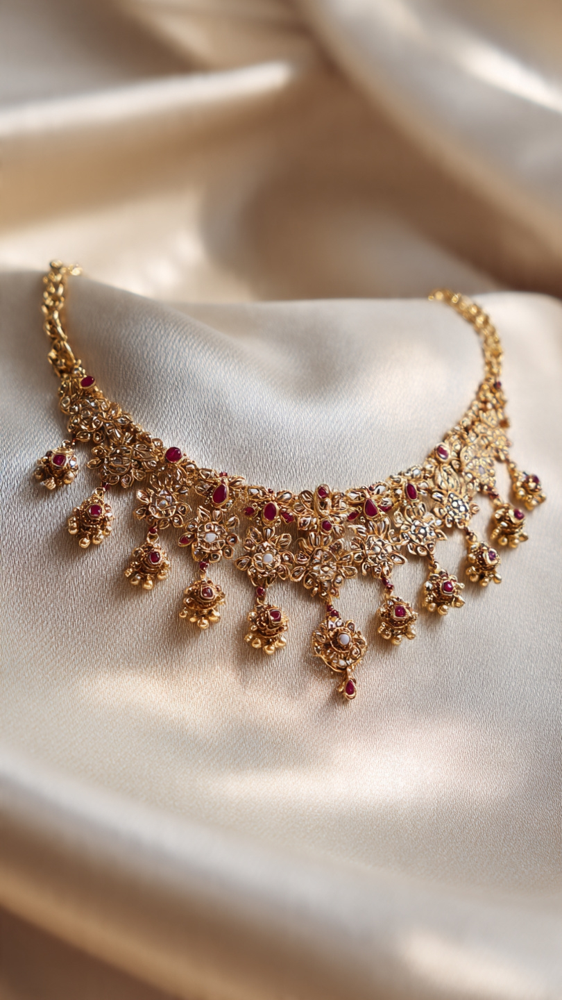
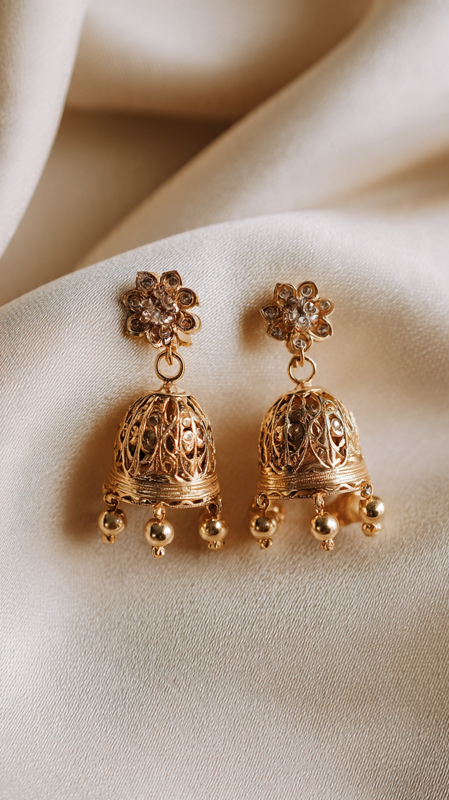
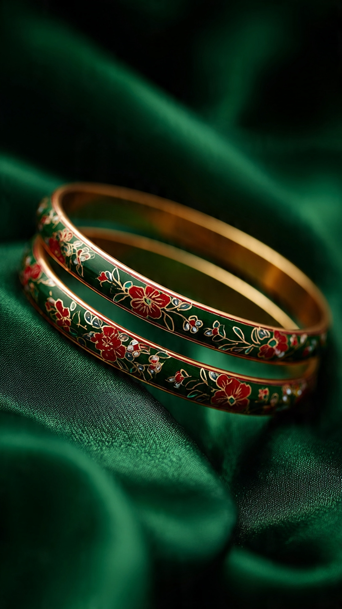
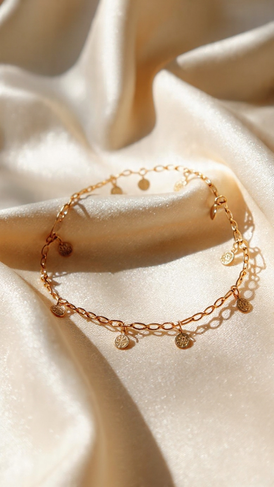
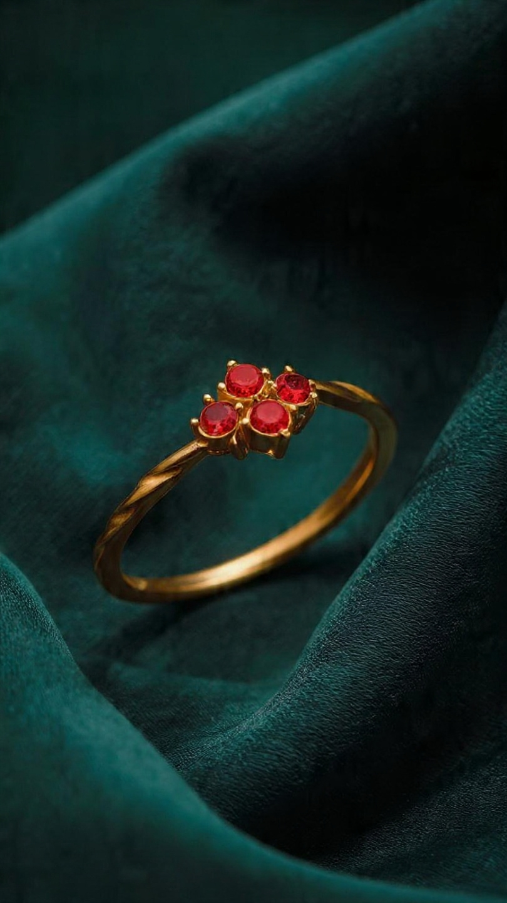
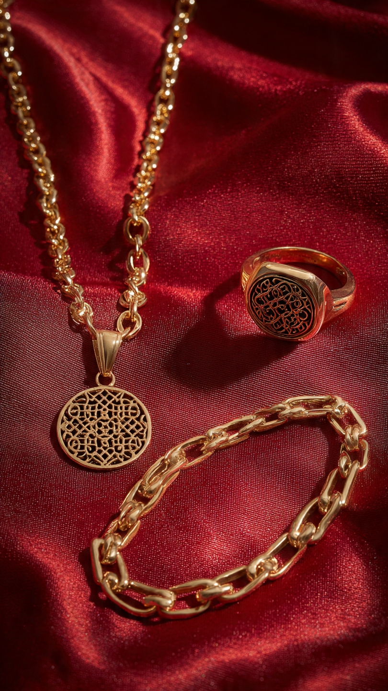

Our Full Collection
Explore our curated investment pieces - deconstructed heritage for modern life.

Heritage Necklace
Price: R 20,000
Material: 18K Gold vermeil on sterling silver with natural ruby and uncut diamond accents.
Craftsmanship: Handmade lattice patterns inspired by ancient South Indian temple carvings. Layered chains with traditional uncut diamonds and deep red rubies. Made by skilled family artisans in Jaipur.

Temple Jhumka Earing
Price: R 4,200
Material: 18K gold over sterling silver with clear cubic zirconia accents.
Craftsmanship: Handmade bell-shaped earrings with open lattice patterns inspired by Tamil Nadu temple architecture. Floral stud tops with crystal details and dangling gold beads. Made by skilled family artisans in Coimbatore.

Meenakari Bangles
Price: R 3,600
Material: 18K gold over brass with hand-painted enamel in green, red, and gold.
Craftsmanship: Hand-painted floral patterns using traditional meenakari enamel technique. Each bangle is crafted by skilled enamel artists in Kolkata, known for fine detail work. Smooth gold interior for comfort.

Arya Anklet
Price: R 2,400
Material: 18K gold over sterling silver with stamped coin charms.
Craftsmanship: Delicate chain anklet with small hanging coin charms inspired by ancient Indian currency. Lightweight and adjustable. Handmade by family artisans in Coimbatore, known for fine chain work.

Dynasty Stack Ring
Price: R 2,900
Material: 18K gold over sterling silver with four lab-created rubies.
Craftsmanship: Four-stone floral ring with twisted band detail. Set with deep red stones inspired by Mughal-era jewellery. Handcrafted by skilled goldsmiths in Rajkot, Gujarat.

Jaali Men Set
Price: R 6,800
Material: 18K gold over sterling silver. Pendant necklace, signet ring, and link bracelet sold as a set.
Craftsmanship: Matching set with carved lattice patterns inspired by Mughal jali screens and ancient stepwell designs. Chunky chain links with smooth finish. Made by master artisans in Jaipur, known for bold statement pieces.